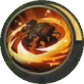

Skill & Build Hero Jawhead
Friday, August 3, 2018 9:04 AM
Sang robot pelempar akhirnya bergabung dengan rekan-rekannya di real server. Walaupun diplot sebagai fighter, Jawhead tidak bisa dimainkan ala fighter konvensional. Kamu membutuhkan banyak pengetahuan dan penyesuaian dengan kondisi pertempuran sebelum akhirnya mahir memainkan Jawhead.
Bisa dibilang kamu akan selalu kalah bila menggunakan Jawhead untuk adu pukul, tetapi sebaliknya Jawhead akan sangat kuat bila kamu mengacaukan formasi musuh dan melakukan pick pada target penting.
Kelebihan
- Memiliki pasif yang kuat
- Mobility sangat tinggi
- Crowd control yang multi fungsi
- Natural tank
Kekurangan
- Sangat bergantung pada tim
- Sulit digunakan
Skill Jawhead
a. Mecha Suppression
Setiap kali Jawhead memberikan damage pada musuh, dia akan mengeluarkan lapisan Compression selama 3 detik (maksimal 10 stack). Setiap stack Compression ini dapat meningkatkan damage basic attack Jawhead hingga delapan persen.
Dengan adanya Mecha Suppression, Jawhead memiliki damage yang lumayan tinggi. Untuk memastikan musuh mendapatkan stack Mecha Suppression hingga maksimal, kamu harus bisa bertahan hidup selama mungkin.
b. Smart Missile
Jawhead akan masuk ke dalam mode peluncuran misil selama 5 detik. Semua misil tersebut akan ditembakkan secara acak hingga 12 kali. Setiap serangan misil akan menghasilkan physical damage.
- Mana cost: 60/65/70/75/80/85 mana
- Cooldown: 5 detik
- Physical damage: 80/90/100/110/120/130
Smart Missiles merupakan serangan dengan target acak yang tidak bisa diarahkan. Misil ini akan sangat efektif bila Jawhead beduel satu lawan satu dengan musuhnya. Karena tidak memiliki target lain, otomatis misil ini akan mengunci musuhnya saja. 720 damage di early game jelas bukan kabar bagus bagi musuh Jawhead.
Skill ini merupakan salah satu damage source dari Jawhead dan bisa dimanfaatkan untuk melakukan wave clear. Sayangnya efektifitasnya akan terus menuru seiring durasi match. Jadi pastikan kamu memaksimalkan Smart Missile di early game, agar potensi kill kamu lebih tinggi dari hero lainnya.
c. Ejector
Saat mengaktifkan Ejector, Jawhead akan memasuki mode melempar dan dia akan mendapatkan sebuah shield dan movement speed tambahan. Kamu bisa menekan tombol skill ini lagi untuk melempar target terdekatmu ke lokasi yang ditentukan. Hasil lemparan tersebut akan menghasilkan physical damage.
- Mana cost:80/90/100/110/120/130 mana
- Cooldown: 12/11,6/11,2/10,8/10.2/9,8 detik
- Physical damage: 300/340/380/420/460/500 physical damage
- Shield: 300/300/500/500/600/600 shield
Ejector bisa menjadi lock skill yang baik, terutama saat dia bekerjasama dengan hero-hero yang memiliki skill dengan damage besar dan bersifat auto target seperti Hayabusa dan Eudora. Yang jadi masalah adalah Ejector bisa melempar teman sendiri, sehingga kamu harus hati-hati ketika menggunakan skill ini.
Ejector menjadi musuh utama Zhask yang sangat bergantung pada Nightmaric miliknya. Dengan adanya Ejector, Jawhead bisa melempar Nightmaric ke posisi yang tidak menguntungkan saat laning maupun team fight. Hal ini menjadikan Zhask tidak berguna dan memaksa musuh melakukan reset.
d. Unstoppable Force
Mengunci salah seorang musuh yang berada di jangkauannya, menerjang ke arahnya dan memberikan efek stun serta memberikan physical damage. Saat target terkena Unstoppable Force dia akan terpental (knocked back) dan bila pentalan tersebut mengenai musuh lainnya, dia akan menghasilkan damage.
- Mana cost:120/150/180 mana
- Cooldown: 35/30/25 detik
- Physical damage: 400/550/700 physical damage
Unstoppable Force bakal menjadi skill insiasi yang baik. Yang perlu diperhatikan para pengguna Jawhead adalah, skill ini memiliki sedikit delay (sekitar 1 detik) ketika digunakan. Jangan sampai kamu nyelonong ke tengah-tengah musuh karena skill ini.
Gear Build Jawhead
| Nama | Gambar | Info |
|---|---|---|
| Magic Shoes |  |
Kedengarannya cukup aneh melihat Jawhead memilih Magic Shoes sebagai movement gear. Tetapi pengurangan efek cooldown sebanyak 10 persen dari sepatu ini sangat menggiurkan terutama di early game. |
| Bloodlust Axe | Gear kedua yang harus dibuat oleh Jawhead adalah Bloodlust Axe. Lagi-lagi gear ini memiliki cooldown reduction sebesar 10 persen. |
|
| Berserker’s Fury | Untuk meningkatkan damage yang sudah dimiliki oleh Jawhead maka tidak ada salahnya kamu menambahkan critical chance. Gear yang bisa dipilih Jawhead adalah Berserker’s Fury yang menambahkan physical damage, critical chance dan critical damage. |
|
| Immortality | Gear yang terakhir ini merupakan pilihan kebanyakan tank dan fighter yang membutuhkan kesempatan kedua untuk melarikan diri atau bertempur sekali lagi. Immortal Resurrection akan membangkitkan Jawhead sekali lagi dengan 15 persen HP dan shield yang mampu menyerap 300 hingga 1000 damage. Shield tersebut akan bertahan selama tiga detik, sedangkan skill Immortal Resurrection memiliki cooldown 180 detik. |
|
| Dominance Ice | Dominance Ice merupakan Gear yang harus dimiliki Jawhead di late game. Efek Artic Cloud yang akan melambatkan pergerakan lawan akan bersinergi dengan skill Smart Missile miliknyanya. |